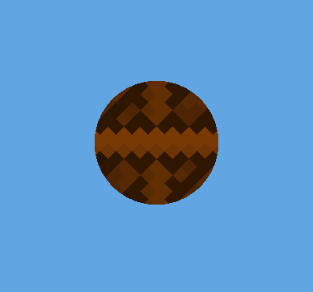
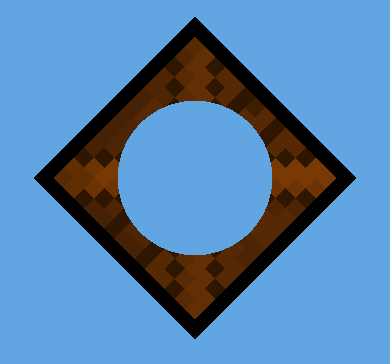

To hide parts of sprites, add a spriteA 2D graphic objects. If you are used to working in 3D, Sprites are essentially just standard textures but there are special techniques for combining and managing sprite textures for efficiency and convenience during development. More info
See in Glossary mask to the sceneA Scene contains the environments and menus of your game. Think of each unique Scene file as a unique level. In each Scene, you place your environments, obstacles, and decorations, essentially designing and building your game in pieces. More info
See in Glossary. You place a sprite maskA texture which defines which areas of an underlying image to reveal or hide. More info
See in Glossary at a position in the scene, and the mask shape hides the sprites that overlap with it.


Sprite masks only affect objects that have a Sprite RendererA component that lets you display images as Sprites for use in both 2D and 3D scenes. More info
See in Glossary component.
Note: Sprite masks are different to the mask map texture you add as a secondary texture to control which areas of a sprite receive light.
Sprite masks aren’t compatible with the following:
Follow these steps:
In your 2D renderer asset, make sure Depth/Stencil BufferA memory store that holds an 8-bit per-pixel value. In Unity, you can use a stencil buffer to flag pixels, and then only render to pixels that pass the stencil operation. More info
See in Glossary is enabled.
To add a sprite mask to the scene, select GameObject > 2D Object > Sprite Mask.
The default mask shape is a circle.
In the Hierarchy window, select the sprite you want to mask.
In the InspectorA Unity window that displays information about the currently selected GameObject, asset or project settings, allowing you to inspect and edit the values. More info
See in Glossary window of the sprite, set Mask Interaction to Visible Inside Mask or Visible Outside Mask.
Make sure the sprite overlaps with the sprite mask.
To change the shape of a mask, follow these steps:
To use a custom shape, create a new sprite with the shape you want to use. Use opaque pixelsThe smallest unit in a computer image. Pixel size depends on your screen resolution. Pixel lighting is calculated at every screen pixel. More info
See in Glossary for the mask shape, and a transparent background for outside the mask.
To change which sprites a mask affects, assign the sprites to sorting layers, then restrict the sprite mask to a range of sorting layers using its Custom Range properties.
For example:
You can also use Sorting Group components to prevent multiple masks from interacting with each other.